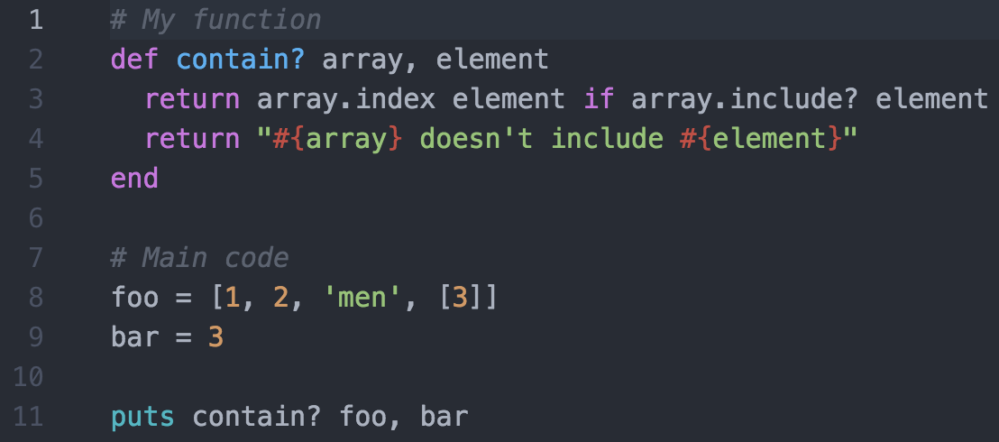
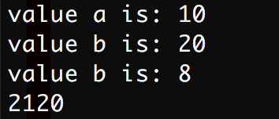
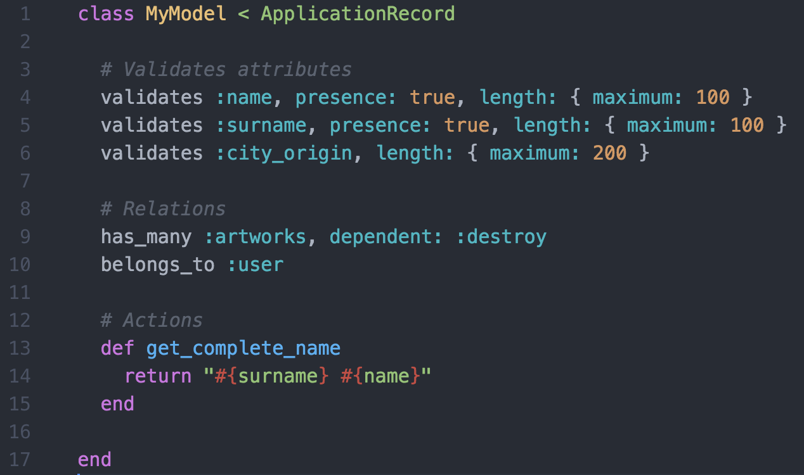

All aboard the Ruby on Rails train
Introduzione al linguaggio Ruby e all'utilizzo del framework Ruby on Rails per lo sviluppo di piattaforme server.
Gregorio Galante & Antonio Dal Cin
Ruby
Ruby è un linguaggio di programmazione nato nel 1993 come progetto personale del giapponese Yukihiro Matsumoto
- Open source
- Orientato agli oggetti
- Variabili di tipo dinamico
- Parametri di tipo dinamico
- Sintassi semplice ed elegante
Esempio
Input funzione
array X, oggetto Y
Output funzione
index di Y in X
stringa "X non include Y"
Versione 1
Versione 2
Versione 3
Qualsiasi oggetto ha un valore
Qualsiasi valore viene percepito come true, ad esclusione di nil e false.
Esempio
I symbols
In ruby esistono delle speciali stringhe chiamate symbols.
Un symbol è una stringa che occupa sempre lo stesso blocco di memoria.
Mentre stampare "I'm a special string" n volte richiede n scritture nella memoria del server, stampare n volte :im_a_special_string ne richiede solo una.
I symbol vengono utilizzati quando specifiche stringhe vengono riutilizzate più volte nel codice.
OOP in ruby
Esempio classe
Variabili d'istanza
@my_variable
- attr_reader = visibile ma non scrivibile dall'esterno
- attr_writer = scrivibile ma non visibile dall'esterno
- attr_accessor = visibile e scrivibile dall'esterno
E se..
@instance_variable_a, @instance_variable_b e @instance_variable_c non sarebbero ne visibili ne scrivibili dall'esterno
Ereditarietà
Differenze?
VS
Entrambe le funzioni ritornano un valore numerico.
In qualsiasi funzione viene eseguito il return. Esso è generato in maniera implicita se non è dichiarato dal programmatore.
Utilizzo delle classi
Output
Librerie in ruby
Nel mondo di ruby le librerie sono definite gemme.
Il package manager ufficiale di ruby è rubygems.org.
Definizione delle dipendenze di un'applicazione
Tutte le gemme di una applicazione ruby sono specificate in un file chiamato Gemfile
Per installare le gemme definite nel Gemfile è necessario eseguire il seguente comando nella root del progetto:
cd /User/giggi/my_project
bundle install
Utilizzo di una gemma
Ruby on Rails
Framework open source per applicazioni web scritto in ruby.
Rails è una gemma di Ruby.

- Basato sull'architettura MVC
- Struttura fissa delle applicazioni
- Indipendente dalla base di dati
- Gestione nativa di diversi ambienti di sviluppo
Installazione e inizializzazione di un progetto
gem install rails
rails new my_project
Architettura MVC in rails
Tre entità
Modelli, Viste, Controller
- il MODEL fornisce i metodi per accedere ai dati utili all'applicazione
- il VIEW visualizza i dati contenuti nel model e si occupa dell'interazione con utenti e agenti
- il CONTROLLER riceve i comandi dell'utente (in genere attraverso il view) e li attua modificando lo stato degli altri due componenti

I model
Classi che forniscono i metodi per accedere e manipolare i dati usati dall'applicazione.
Esempio model
In rails tutti i modelli sono sottoclassi di ApplicationRecord.
All'interno di un model è possibile accedere agli attributi dell'istanza tramite self.attribute_name o attribute_name.
ApplicationRecord fornisce tutte le funzioni necessarie a visualizzare, modificare o salvare dati.
ApplicationRecord fornisce inoltre delle funzioni di callback utilizzabili prima e dopo il processo di scrittura dei dati.
Generare un modello
Per velocizzare lo sviluppo rails fornisce un comando utile a generare un modello.
rails generale model MyModel
Oltre a generare la classe del modello, il comando crea un file di migrazione e una classe di test.
I controller
Classi che gestiscono le richieste dei client.
Client -> Controller -> Model -> Controller -> Client
Esempio controller
render VS redirect_to
render: identifica la risorsa da inviare al client come risposta (documento html, json, file generico ecc.).
redirect_to: esegue un redirect della chiamata ad un'altra action del server.
Gestione dei routes
I routes del server sono specificati in un file routes.rb.
Esempio file routes.rb
Resources
resources permette di definire velocemente tutte le routes necessarie a gestire il CRUD di un ipotetico modello.
In pratica equivale a...
Generare un controller
Per velocizzare lo sviluppo rails fornisce un comando utile a generare un controller.
rails generale controller MyController action_1 action_2 action_n
Oltre a generare la classe del controller, il comando crea anche una classe di test.
Le view
File .erb (di default) che vengono compilati ed inviati al client su richiesta.
Ogni file che fa parte delle view è disponibile al client solamente attraverso una richiesta alle actions dei controller.
Auto rendering
Ogni action di un controller che non contiene la chiamata a render (o redirect_to) si aspetta di trovare un file da renderizzare all'interno delle view.
Esempio
L'action index all'interno di users_controller.rb si aspetta di trovare un file index.html.erb dentro a view/users.
Se index.html.erb non è presente allora proverà a cercare index.json.erb o index.js.erb.
Esempio view
Per evitare la presenza di blocchi di codice ruby all'interno delle view, rails ha introdotto dei moduli chiamati helpers.
Un helper contiene delle semplici funzioni utilizzate per mantenere pulito il codice delle view.
Esempio precedente con l'uso di un helper

Generare una gestione del CRUD completa
Uno dei tool più comodi offerti da rails è lo scaffold.
Uno scaffold genera automaticamente tutti i file necessari per gestire un modello e i suoi relativi dati.
rails generate scaffold User name:string surname:string age:integer
I file generati da questo comando saranno il modello User.rb, il controller users_controller.rb contenente le actions gestite da resources (index, new, create, edit, update, destroy, show), le view relative alle actions del controller.
Dopo l'esecuzione dello scaffold l'aplicazione è pronta per gestire il CRUD degli utenti del sistema.
La stuttura delle directory
I musts
/app Nel dettaglio
/app/Jobs
/app/Channels e Action Cables
Gestione della base di dati
Rails permette di sviluppare applicazioni indipendenti dalla base di dati.
I modelli permettono al programmatore di interfacciarsi al db attraverso semplici funzioni.
Funzioni per accesso al db
Le query generate dalle funzioni dei models dipendono dal database utilizzato.
La trasformazione delle funzioni in query viene gestita da gemme esterne.
In molti casi le gemme che si occupano di tale trasformazioni gestiscono in maniera automatica anche il caching dei dati.
Esempio mysql
Query al modello:
client = Client.first(3)
SQL Relativo:
SELECT * FROM clients ORDER BY clients.id ASC LIMIT 3
L'utilizzo di queste funzioni permette di mantenere il codice dell'applicazione indipendente dal database utilizzato.
production -> MySQL
development -> SQLite
Le migrazioni
Rails mantiene memorizzate tutte le modifiche che avvengono al db durante il ciclo di vita del sistema.
Per creare una nuova tabella nel database si utilizza il comando:
rails generate migration CreateUsers
Il comando genera un file definito in questo modo:
20161010140747_create_users.rb
Il file di migrazione risultante avrà il seguente formato:
Per scrivere effettivamente la tabella nel database deve essere eseguito il comando:
rails db:migrate
L'utilizzo delle migrazioni permette di mantenere sincronizzati rispetto alla struttura del database diversi ambienti di sviluppo. Esse inoltre permettono facilmente di eseguire rollback dello stato del sistema.
Esempio rollback:
rake db:migrate:down VERSION=20100905201547
Gestione nativa di diversi ambienti di sviluppo
Rails supporta nativamente diversi ambienti di sviluppo.
Gli ambienti supportati sono: Test, Development e Production.
Per ogni ambiente di sviluppo esiste un file di configurazione dove è possibile impostare regole specifiche per l'ambiente.
Esiste inoltre un unico file di configurazione che gestisce le impostazioni condivise tra gli ambienti.
Anche i database possono essere diversi per ogni ambiente utlizzato.
Di default si utilizza SQLite per gli ambienti di development e test, MySQL o PostgreSQL per l'ambiente di production.
Allo stesso modo anche la gestione delle socket può variare dall'ambiente di sviluppo. Solitamente nell'ambiente di production ci si appoggia ad un server redis che gestisce le socket in un thread a parte.
Altre funzioni utili
Gestione della cache manuale
E' possibile gestire una cache manualmente per memorizzare i dati più frequentemente utilizzati.
Si possono utilizzare diverse tipologie di cache a seconda dell'ambiente di sviluppo (cache in ram, cache su file, cache su server esterni).
La cache viene gestita come una collezione di oggetti chiave-valore. I dati sono accessibili tramite una funzione di lettura e una funzione di scrittura.
Gestione delle lingue
Nel file di configurazione dell'applicazione o in quelli dei singoli environment è possibile specificare la lingua utilizzata dal sistema.
Rails si occupa in maniera autonoma di tradurre i messaggi gi errore e tutte le informazioni che genera all'utente.
Permette inoltre di customizzare le traduzioni manualmente attraverso degli specifici file yaml.
Gestione delle notifiche
Per gestire facilmente le notifiche da mostrare all'utente nelle view vengono utilizzati i flash.
I flash sono una collezioni di oggetti chiave-valore che vengono generati nel controller e stampati (se inseriti) nelle view esclusivamente nella prima risposta inviata al client dal server.